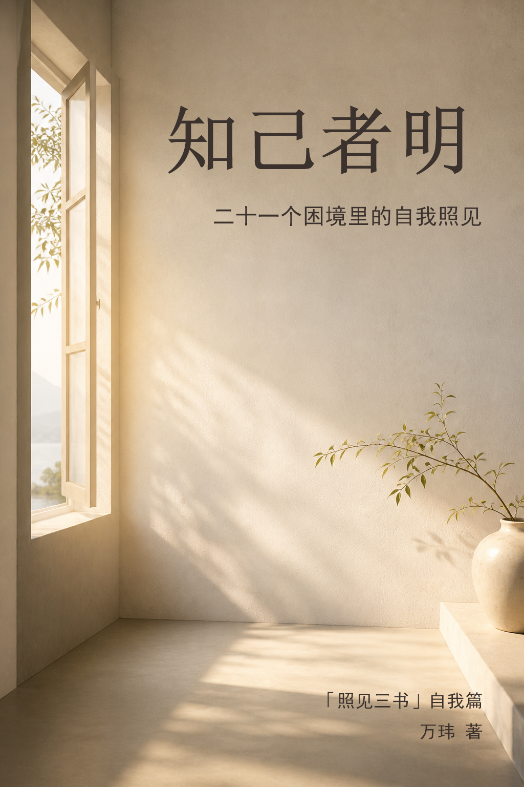

Bookshelf
三本书放在同一个安静的阅读书架里。你可以从自我、职场或关系进入，也可以按自己的节奏慢慢读。

二十一个困境里的自我照见
从评价、比较、内耗和旧模式里，把注意力慢慢收回自己身上。
二十一个职场困境里的识人与回应
看懂话外之意、角色位置、组织规则和利益流动，也保留自己的温度。
在二十一种重要关系里，找回生命的意义感
在伴侣、家人、朋友、陌生人与万物的连接里，重新长出生命的实感。